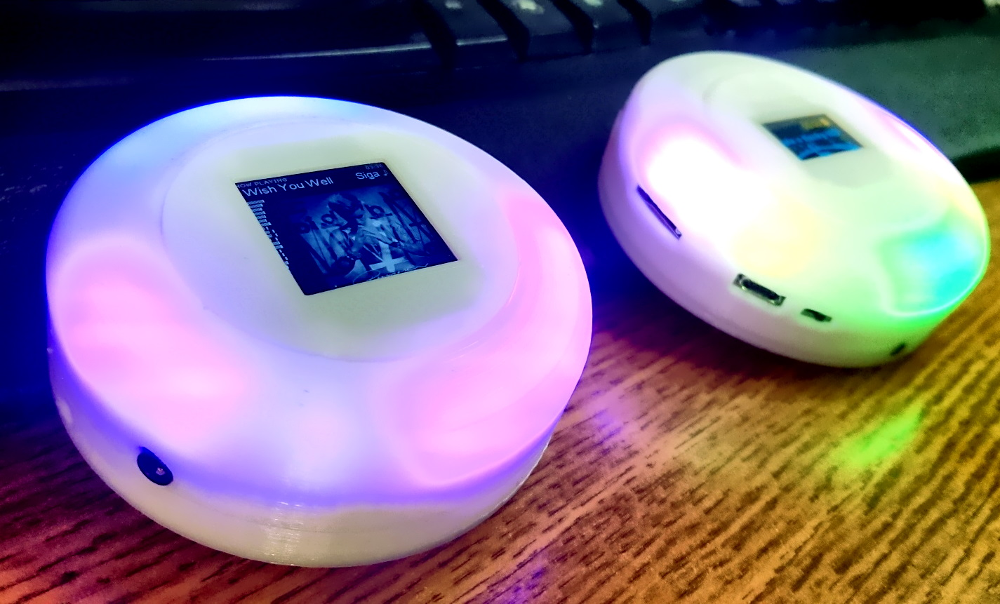

Squeezelite-ESP32 DIY Projects
Installs ESP32 firmware directly to a device connected to your computer.
Instructions
- Plug in the device using a usb cable or serial adapter.
- Select the "Version" button for the project and follow prompts.
- When complete, connect to the hot-spot to configure the device.
NOTE: The installer will erase all configurations. You will need to reconnect to the hot-spot to configure wifi
Squeezebox-Spinner (ESP32 only)
Portable Squeezebox player using a TTGO TAudio (T9) running Squeezelite-ESP32 in mini a 3d printed case.
NOTE: Use 16bit version for resampling (needed on many BT devices)

Squeezebox-Tembed (ESP32-S3 only)
Squeezebox SPDIF player using a TTGO T-Embed module
NOTE: This is a PURE version (LMS only with no BT, AirPlay, or CSpot!)

Squeezelite-ESP32 PURE (ESP32-S3 only)
*** The download is offered AS-IS. It is NOT maintained or supported. ***
Flashable binary for generic ESP32-S3 boards. [Minimum requirments: 8MB RAM and 4MB Octal SPI PSRAM]
NOTE: This is a PURE version (LMS only with no BT, AirPlay, or CSpot!)
The PURE builds are an independant fork of Squeezelite-ESP32. If you want up-to-date code and information refer to that project.